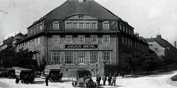
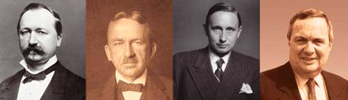
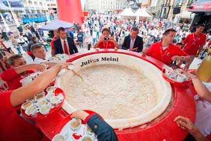

Легендарный мавритенок, который стал логотипом компании в 1924 году, является символом настоящего австрийского качества и восхитительного вкуса во всем мире. Исторически, Julius Meinl - бренд №1 в Австрии, что только помогает в укреплении позиций на мировой арене.
Кофе Julius Meinl

Julius Meinl — старейший европейский кофейный бренд. За 150 лет существования эта марка стала легендой, олицетворением качества для любителей кофе во всем мире. История компании началась с 1862 года, когда Юлиус Майнл открыл свой первый магазин, продавая зеленый кофе в центре Вены. Он создал купажи кофе и был первым, кто начал обжаривать кофе и продавать свежеобжаренные зерна. В 1891 году Julius Meinl открыл первый завод по обжарке кофе. С тех пор имя Julius Meinl ассоциируется с традицией приготовления кофе по-венски и является гарантией высочайшего качества продукции.
Основные даты

- 1862 Julius Meinl открыл свою первую торговую лавку.
- 1891 Компания Julius Meinl открывает первый завод по обжарке кофе.
- 1924 Художник Джозеф Биндер создает логотип компании в виде мавретенка в феске пьющего кофе.
- 1934 Julius Meinl становится крупнейшим в Европе продавцом продуктов питания.
- 1980 Julius Meinl представляет кофейную смесь Президент как премиум бренд.
- 1984 Покупка Арабской кофейной компании.
- 1999 Julius Meinl открывает магазин розничной торговли основной продукцией является Кофе, выход нк рынки центральной и восточной Европы.
- 2002 Открытие первого кофе хауса в Чикаго США.
- 2004 Выпуск нового логотипа компании дизайнером Матео Туно. И представление нового дизайна кофейной чашки.

Дизайн
Упаковка кофе — одна из важнейших составляющих продукта. Хороший дизайн упаковки способствует продаже кофе, а также отлично защищает находящиеся внутри зёрна от выветривания аромата. Упаковка для Юлиус Мейнл была создана дизайнером Маттео Туном, известном во всём мире. Тун был вдохновлен темой так называемых "венских мастерских" (Wiener Werkstätte) – художественным направлением, основанным Йозефом Хоффманном в 1903 году в Вене. В дизайне упаковок для кофе Маттео использовал элементы дизайна, типичные для этого стиля.
Сертификация
Компания Julius Mainl имеет сертификат и стандарты RainForest Alliance (RFA). Rainforest Alliane ставит целью своей работы сохранение биоразнообразия и обеспечение устойчивых условий жизни посредством преобразования практики ведения сельского хозяйства, практики ведения бизнеса, а также изменения потребительской культуры. Организация проводит добровольную сертификацию плантаций на соответствие требованиям и критериям стандартов. Наличие сертификата у плантаций Julius Meinl позволяет использовать маркировку RFA на упаковках кофе, выращенного на данных плантациях. Маркировка RFA позволяет потребителям совершать информированный выбор при покупке кофе Юлиус Мейнл и является существенным конкурентным преимуществом для потребителей, придерживающихся принципов этичного потребления.
Кофейные зерна Юлиус Майнл проходят тщательную проверку, начиная со сбора на плантациях Западной Африки, Кении, Эфиопии, Центральной и Латинской Америки, Бразилии, Индии. Обработка, обжарка и упаковка кофе производится на заводах Julius Meinl в Австрии и Италии под контролем высококлассных специалистов.